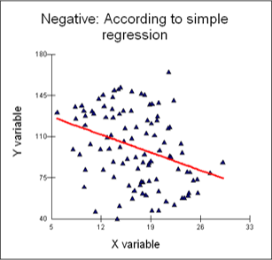
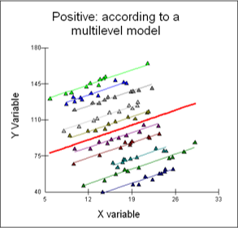
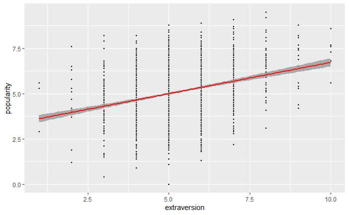
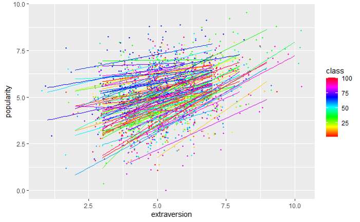
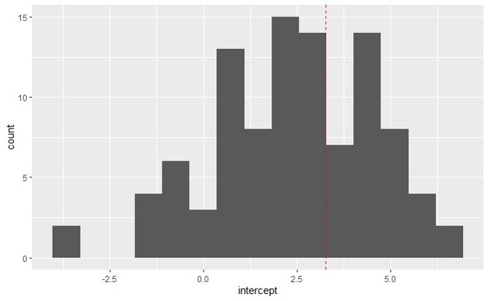
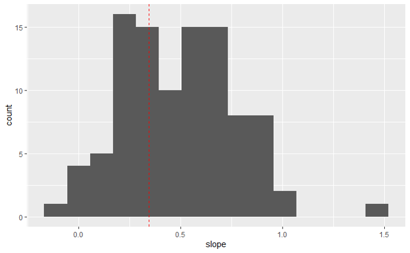

Social research often involves investigating the relationship between individuals and the social contexts in which they live, work etc. We expect that individuals are influenced by the groups to which they belong, and that groups are influenced by the individuals therein.
We conceptualise the above via a hierarchical system in which individuals and groups represent different levels of the hierarchy. For example, in an education setting we might think of a population of schools, classes within schools and pupils within these classes. This is an example of a three level hierarchical structure with pupils nested in classes, and classes nested in schools.
Variables are attributes of levels. Usually, a variable can be clearly allocated to a certain level; i.e. the level at which it is measured. For example, gender or age would be measured at pupil level. Class size would be measured at class level.School type (faith school, free school, academy,…) would be measured at school level.
We expect similarities of lower-level-units belonging to the same upper-level-items which causes correlation between the units. Statistical models that ignore these correlations can lead to analyses that give incorrect conclusions.
For example, ignoring correlation can lead to smaller standard errors of test statistics which may lead to effects incorrectly labelled as “significant”.
The plots below show the fits of two different regression models which
(top) assumes that all lower-level-units are from the same group (ignores group structure),
(bottom) takes into account the presence of group structure.


Figure 1: Multilevel model motivation.
Incorrect approaches fr dealing with multilevel structures:
Disaggregation: All units at the lower level receive the value of a variable at the higher level at which they were measured, resulting in contextual variables (for example, each pupil gets associated to the size of their class). Lower-level units treated as independent.
Aggregation: Operating at a higher level, one takes averages or other aggregated measures of lower-level units to use as predictor at that level, resulting in structural variables. For instance, a class may be given an attribute “mean intelligence”.
The latter can lead to an ecological fallacy. This occurs when inferences about the nature of individuals are deduced from inferences about the group to which those individuals belong.
Example 1: Consider the the following height data (in cm) from a single group of individuals: What is the mean? Suppose that the population mean is 177. Can we infer that a random individual selected from the group is more likely to be taller than the mean of the general population?
Example 2 (Robinson effect): Robinson (1950) highlighted that the (at the time) commonplace practice of
aggregating individual-level data to group- or class-means,
estimating correlations, effects, etc on the upper (group) level,
drawing from these conclusions for individuals on the lower level
is fundamentally flawed (since group-level variables may act as moderators).
Robinson computed the illiteracy rate and the proportion of the population born outside the US for each state and for the District of Columbia, as of the 1930 census. He found a negative correlation of 0.53. However, when individuals are considered, the correlation between illiteracy and nativity was 0.12. Can you think of an explanation for this?
We will consider data on student popularity taken from Hox et al. (2018).
We have:
Lower level (level 1): pupils
Upper level (level 2): classes
The data are from classes with pupils in each class and . The response/outcome variable is at the pupil level and is a popularity score measured on a continuous scale ranging from 0 (very unpopular) to 10 (very popular).
We further have explanatory variables on pupil level:
Pupil extraversion (), measured on a self-rating 10-point scale from 1 (min) to 10 (max)
Pupil gender (), with values (boy) and (girl)
and explanatory variable on class level:
Teacher experience (), in years, ranging from 2-25, integer-valued.
Let’s ignore the two-level structure, gender, and teacher experience for now, and consider a single covariate extraversion, denoted by for simplicity.
We then fit the model where the are independent Gaussian error terms (with mean zero and variance . Fitting the model in R gives the following output:
## Estimate Std. Error t value Pr(>|t|)
## (Intercept) 3.2728356 0.12473523 26.23826 1.237371e-130
## extraversion 0.3458513 0.02324748 14.87694 1.481801e-47for which the fitted regression line is:


Figure 2: Top: data and fitted regression line with standard error band (ignores class structure. Bottom: data (jittered for better visibility) separate regression lines for each class.


Figure 3: Top: histograms of class-wise intercepts. Bottom: histograms of class-wise slopes.
Figure 2 (top) shows the fitted regression line for the regression model that ignores group (class structure). Figure 2 (bottom) fits a separate regression model to each class. That is, for class , we fit the model The resulting intercept estimates and slope estimates are plotted as histograms in Figure 3.
Instead of fitting 100 separate regression models, we would like to explain within class variation using a single model.